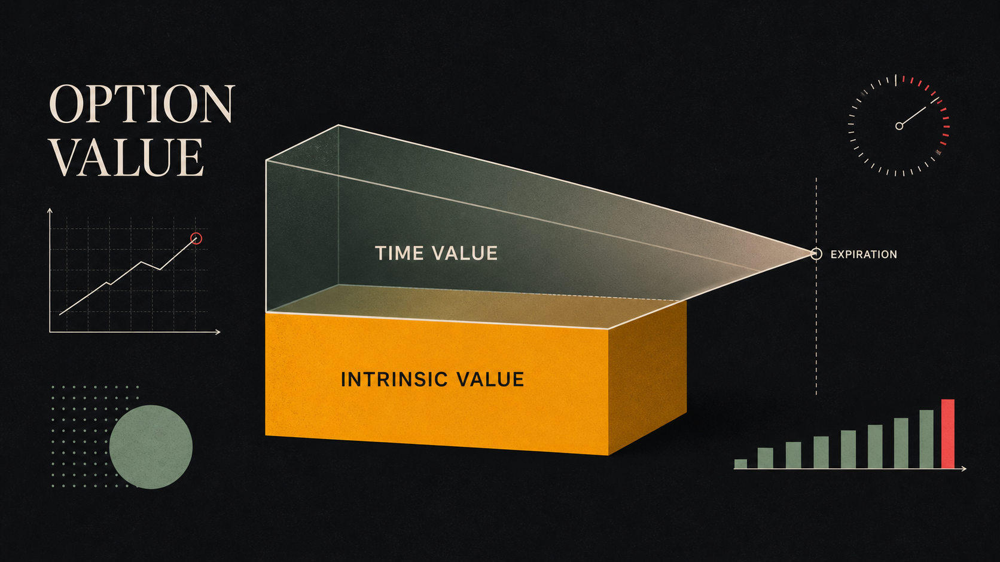
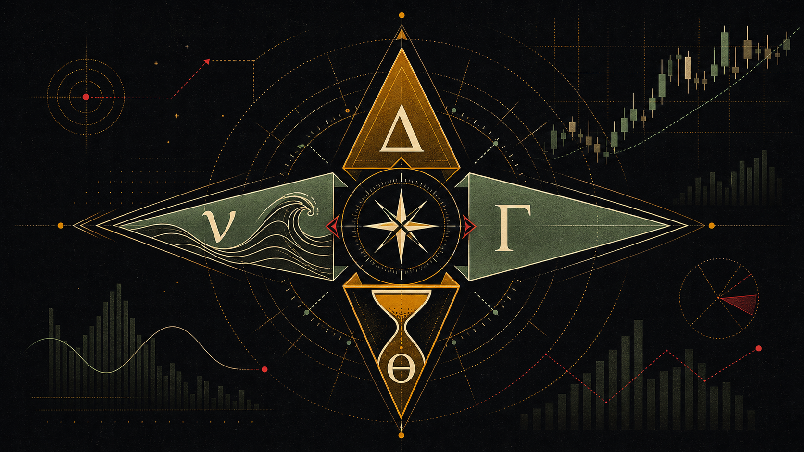
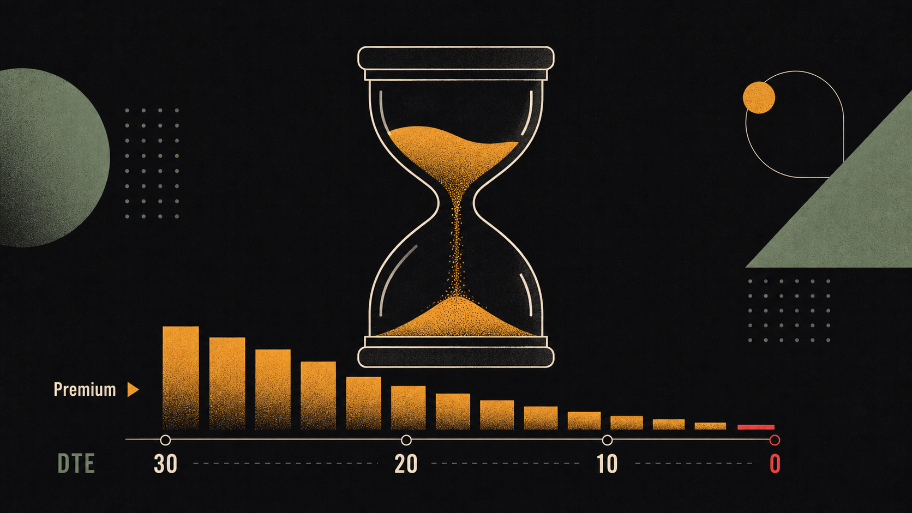
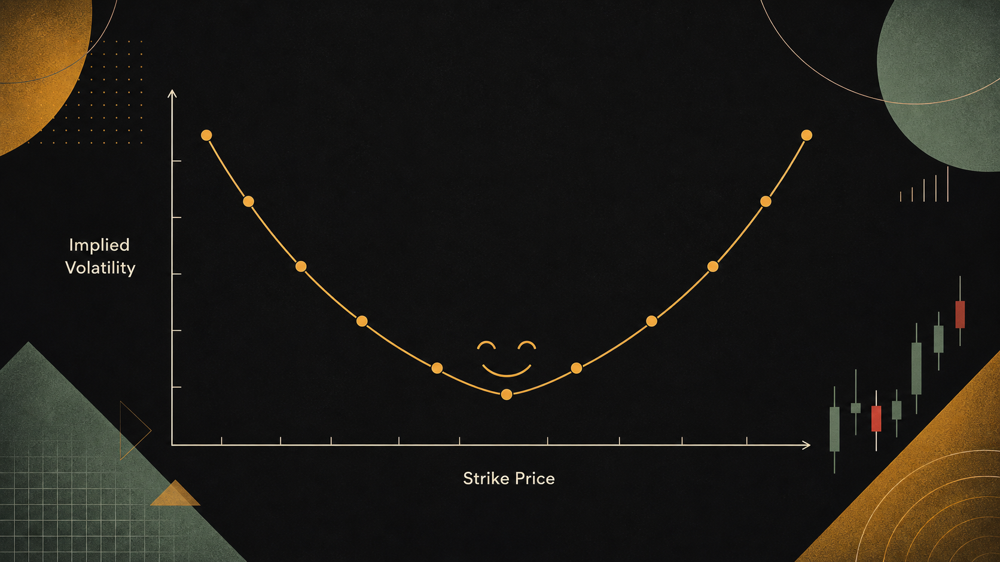

假设你看好苹果下个月的财报，但又怕买错了亏钱。有没有一种工具，让你可以「押对方向大赚，押错方向损失有限」？有——这就是期权。它是美股市场上最强大也最容易被误用的工具，而理解它的关键，是先搞清楚那四个希腊字母到底在量什么。
期权是什么：保险合约的炒股版
要理解期权，最好的比喻是保险合约。
当你买了一份车险，你支付了一笔保费（权利金），换来了在特定期间内，如果汽车发生事故，保险公司按约定赔偿的权利。这个「赔偿权利」的触发条件是「出事故」，如果一整年平安无事，你的保费就「损耗」掉了。
期权的逻辑完全一样：
保险公司（承保人）→ 收取保费 → 承担赔付义务
期权卖方 → 收取权利金 → 承担履约义务
期权最核心的特征：买方享有权利但没有义务，卖方收了钱就必须履约。
每一份美股期权合约的标准规格：
- 标的资产：对应的股票或ETF（如AAPL期权对应苹果股票）
- 合约乘数：1份期权 = 100股的权利（所以实际成本要 × 100）
- 执行价（Strike Price）：约定的买卖价格，到期时以此价格执行
- 到期日（Expiration Date）：合约失效的日期，美股期权通常到期于周五
- 权利金（Premium）：购买期权支付的价格，这是买方的最大损失，也是卖方的最大收益
Call 和 Put：两种基础权利
期权只有两种基础类型：看涨期权（Call）和看跌期权（Put）。
看涨期权（Call Option）
Call 赋予你以约定价格「买入」100股股票的权利（注意：是权利，不是义务）。
一个具体的例子：
情景 A：30天后 AAPL 涨到 $325
→ 你有权以 $300 买入，立即卖出市价 $325，每股利润 $25
→ 减去权利金 $5.00，净利润 = $20.00/股 × 100 = $2,000（投入$500，回报300%！）
情景 B：30天后 AAPL 跌到 $280
→ 执行价$300高于市价$280，没有人会愿意以$300买股票
→ 期权作废，损失权利金 = $500（仅此而已，不会亏更多）
Call 的盈亏特征：最大损失 = 权利金（有限）；最大利润 = 理论上无上限（因为股价可以无限涨）。这是为什么期权买方有不对称的风险收益结构。
看跌期权（Put Option）
Put 赋予你以约定价格「卖出」100股股票的权利。Put 在两种情景下有用：
- 做空股票：你认为苹果要跌，买 Put 如果苹果下跌，你的 Put 升值。这是不持有股票也能从下跌中获利的方式。
- 为持仓保险：你已经持有苹果1000股，担心短期下跌，买几份 Put 对冲——就像给持仓买了保险。这就是机构投资者常用的「保护性 Put」。
→ 股票亏损：（$300 − $250）× 100 = -$5,000
→ Put 获利：（$290 − $250）× 100 = +$4,000，减去权利金 $400 = +$3,600
→ 净亏损：-$5,000 + $3,600 = -$1,400（而不是 -$5,000）
这份 Put 把损失从 $5,000 压缩到了 $1,400——保险发挥作用了。
价值状态：ITM、ATM、OTM
期权相对于标的股价的位置，用三个术语描述：
| 状态 | 英文缩写 | Call 的含义 | Put 的含义 |
|---|---|---|---|
| 价内 | ITM（In-the-money） | 股价 > 执行价（可以立即盈利行权） | 股价 < 执行价（可以立即盈利行权） |
| 平价 | ATM（At-the-money） | 股价 ≈ 执行价（最接近当前股价） | 股价 ≈ 执行价 |
| 价外 | OTM（Out-of-the-money） | 股价 < 执行价（不值得行权） | 股价 > 执行价（不值得行权） |
OTM 期权最便宜（纯时间价值），杠杆最高但到期归零的概率也最大——这是大多数散户亏钱的地方。ATM 期权Delta最接近0.5，对股价变动最敏感，流动性通常最好。ITM 期权最贵，但更接近直接持有股票的感觉，杠杆相对小。
内在价值与时间价值
期权的权利金（价格）由两个部分构成，理解这两个部分，是理解期权定价的基础：
Call 内在价值 = max(0, 股价 − 执行价)
Put 内在价值 = max(0, 执行价 − 股价)
OTM 期权的内在价值永远为零。只有 ITM 期权有内在价值。
代表市场对「未来可能性」的定价——期权还有时间，股价还有可能朝有利方向移动。时间越长、波动率越高，时间价值越大。到期日时，时间价值归零。
一个具体例子：AAPL 当前股价 $305，持有 AAPL $300 Call（价内），权利金 $8.20。
- 内在价值 = $305 − $300 = $5.00
- 时间价值 = $8.20 − $5.00 = $3.20
- 这 $3.20 是市场愿意为「未来30天内苹果可能继续涨」支付的溢价。
期权的时间价值就像冰块——每天都在融化，只是你感觉不到它在流失，直到到期日前夕。
— 期权交易员格言
Delta：期权的「方向感」
Delta（Δ）是最重要的希腊字母，也是最直观的。它告诉你：当标的股价变动 $1 时，期权价格大约会变动多少。
Delta = 0.50（ATM Call）：股价涨$1，期权涨$0.50
Delta = 0.80（深度ITM Call）：股价涨$1，期权涨$0.80
Delta = 0.10（深度OTM Call）：股价涨$1，期权涨$0.10
Delta = −0.50（ATM Put）：股价涨$1，期权跌$0.50
Delta = −0.80（深度ITM Put）：股价涨$1，期权跌$0.80
Delta = −0.10（深度OTM Put）：股价涨$1，期权跌$0.10
Delta 还有第二层含义：期权到期时处于价内（ITM）的概率近似值。Delta = 0.30 的 Call，大约有30%的概率在到期时股价在执行价以上（使期权有价值）。这对期权策略的风险评估非常有用。
→ 期权价格变化 ≈ 0.55 × $5 = +$2.75（理论值，实际略有差异因Gamma）
→ 新期权价格约 $7.75
→ 一份合约（100股）：盈利 $275，投入 $500，回报率 = +55%
→ 同样的$5涨幅，直接持股100股回报 $500，但需要投入 $30,000
→ 期权杠杆效应：相同资本，期权回报率远高于直接持股
一个叫做「Delta对冲（Delta Hedging）」的概念：如果你持有 Delta = 0.50 的 Call（一份合约 = 100股），你的期权仓位等同于持有 50 股的多头暴露。如果你做空 50 股来对冲，你的 Delta 就接近于 0（市场中性）——这是机构交易台常用的风险管理方法。

Gamma、Theta、Vega：其他三个希腊字母
如果说 Delta 是方向，那么另外三个希腊字母告诉你这个方向有多「不稳定」、「时间有多贵」，以及「波动率有多重要」。
Gamma（Γ）—— Delta 的加速度
Gamma 衡量的是 Delta 的变化速率：当股价移动 $1 时，Delta 会改变多少。可以把它想象成物理学里的「加速度」（而 Delta 是速度）。
Gamma 在 ATM 期权（执行价 ≈ 股价）和临近到期时最高。高 Gamma 意味着：
- 对买方来说是机会：股价移动时，Delta 迅速增大，期权价值加速上涨（正向 Gamma 暴露）。
- 对卖方来说是危险：如果你卖出了 ATM 期权，股价大幅波动会让你的亏损以加速度扩大——这就是「Gamma 风险」。
Theta（Θ）—— 时间是买方的敌人
Theta 衡量每过一天，期权价格自然损耗多少（时间衰减）。对于买方，Theta 是负数——你每天「坐」在一个融化中的冰块上。
关键事实：
- Theta 在临近到期时加速：30天到期的期权可能每天损耗$0.05，但同样的期权在最后7天可能每天损耗$0.15以上。
- 期权卖方（Seller）是 Theta 的受益者——只要股价不大幅移动，时间每过一天，他们的利润就增加一点。
- 这就是为什么很多专业交易者更喜欢卖期权（赚时间价值）而不是买期权（抵抗时间衰减）。
→ 期权价值约减少 0.08 × 10 = $0.80
→ 新价格约 $3.20（跌了20%）
→ 而苹果股票一分没变！
这就是为什么「方向对了但还是亏钱」的情况时有发生——时间吃掉了你的利润。
Vega（ν）—— 波动率的定价
Vega 衡量隐含波动率（IV）每变动 1%，期权价格的变化量。Vega 对于买卖双方都是双刃剑，但其最重要的实际应用，是理解财报前后的IV变化。
当 Vega = 0.15，这意味着：
- IV 从30% 涨到 31% → 期权价格上涨约 $0.15
- IV 从30% 跌到 29% → 期权价格下跌约 $0.15

隐含波动率（IV）：期权价格的灵魂
隐含波动率（Implied Volatility，IV）是期权定价中最复杂也最重要的变量。简单说：IV 越高，期权越贵；IV 越低，期权越便宜。
IV 不是历史波动率（过去发生了什么），而是市场参与者对未来波动的预期——从期权价格反推出来的数值。当市场预期某只股票即将大幅波动（如财报前），期权买家愿意付更高权利金，IV 随之上升。
IV Crush：财报后的波动率崩塌
这是期权新手最容易踩的坑之一。以苹果财报为例：
财报后：苹果EPS超预期，股价从$300涨到$309（涨3%）
你以为赚到了——但期权价格从$8.50变成了……$5.20
发生了什么？IV从65%暴跌到28%（崩塌了37个百分点）
IV崩塌损失 ≈ 0.18（Vega）× 37 = −$6.66，抵消了Delta带来的+$3.30，
最终你亏损了 $330——尽管苹果如你预料地上涨了！
这就是「方向对了，还是亏钱」的最经典场景。财报前 IV 高企，是期权卖方而非买方的机会。专业的期权交易者在财报前往往会卖出跨式期权（Straddle/Strangle），赚取 IV Crush 带来的时间价值收益。
最后，把四个希腊字母串起来，用一个公式理解期权价格的变动：
期权价格变化 ≈
Δ × ΔS（Delta × 股价变化）
+ ½Γ × ΔS²（Gamma 二阶影响）
+ Θ × Δt（Theta × 时间流逝）
+ ν × ΔIV（Vega × 波动率变化）
这不需要死记，理解它的含义就好：期权价格受到方向、加速度、时间和波动率四个维度的共同影响。这正是期权比直接买股票复杂，但也更灵活的原因。
- 期权 = 保险合约的炒股版。买方支付权利金，获得权利但无义务；卖方收权利金，承担义务。买方最大损失 = 权利金（有限），最大获利理论上无限。
- Call 赋予「买入」权利（看涨），Put 赋予「卖出」权利（看跌/对冲）。每份合约对应100股，价格要乘以100。
- 期权价格 = 内在价值 + 时间价值。OTM期权全是时间价值，到期归零；ITM期权有内在价值。
- Delta（0~1 for Call）= 股价每变动$1，期权变动多少，也近似代表到期ITM的概率。
- Gamma = Delta的变化速率，ATM和临近到期时最高。高Gamma对买方是机会，对卖方是风险。
- Theta = 每日时间衰减，对买方是持续损耗（负数）。越临近到期，Theta越大（加速侵蚀）。
- IV Crush是新手最大的坑：财报前IV高，财报后IV暴跌，即使方向对了也可能亏钱。财报前是卖方策略，不是买方策略。
| 中文 | 英文 | 一句话解释 |
|---|---|---|
| 期权 | Option | 以约定价格买卖标的资产的权利合约 |
| 看涨期权 | Call Option | 赋予持有人以执行价买入100股的权利 |
| 看跌期权 | Put Option | 赋予持有人以执行价卖出100股的权利 |
| 执行价 | Strike Price | 期权合约中约定的买卖价格 |
| 权利金 | Premium | 购买期权支付的价格，是买方最大损失 |
| 到期日 | Expiration Date | 期权合约失效的日期，美股通常为周五 |
| 内在价值 | Intrinsic Value | 立即行权可获得的价值，OTM期权为零 |
| 时间价值 | Time Value / Extrinsic Value | 权利金减去内在价值，随时间流逝衰减 |
| Delta | Delta（Δ） | 股价变$1时期权价格的变化量；也约等于到期ITM概率 |
| Gamma | Gamma（Γ） | Delta的变化速率，ATM和临近到期时最高 |
| Theta | Theta（Θ） | 每日时间衰减，对买方是损耗，对卖方是收益 |
| Vega | Vega（ν） | IV每变动1%，期权价格的变化量 |
| 隐含波动率 | Implied Volatility（IV） | 从期权价格反推的市场对未来波动的预期 |
| 波动率崩塌 | IV Crush | 财报等事件后IV骤降，导致期权价格暴跌 |

购买一份 Call Option（看涨期权），赋予了你什么权利？
Theta 为负（如 −$0.08/天）对期权买方意味着什么？
一份 Call 期权的 Delta = 0.70，当标的股票上涨 $1 时，该期权价格大约变化多少？
一家公司财报发布前，其期权的隐含波动率（IV）通常会发生什么？